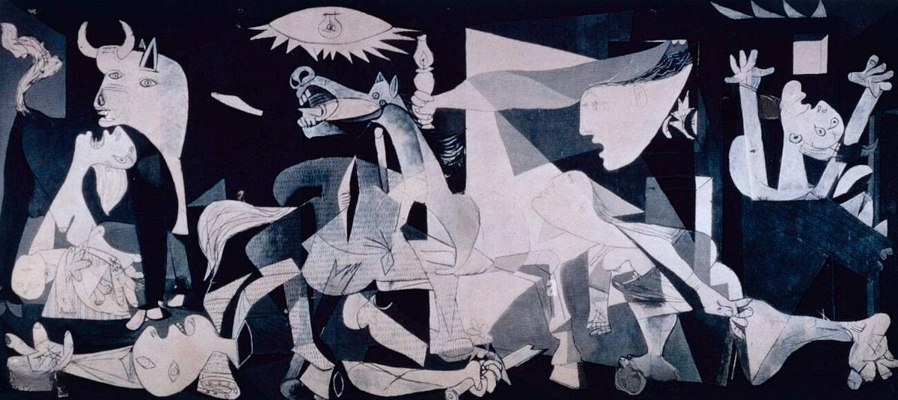

Xabier
Data Science · UW-Madison
About
I'm a senior studying data science at the University of Wisconsin-Madison, and I'm from Spain.
Most of my coursework sits somewhere between statistics, machine learning, and just getting real data into usable shape, which is usually the part that takes the longest.
A painting I like

I saw it for the first time in a Spanish class in high school. Picasso painted it within weeks of the bombing of Gernika in April 1937, a Basque town in the north of Spain. Being Spanish, it isn't a painting about a distant event to me.
There's no color in it at all, only greys and blacks and a washed out white. Every figure is mid-scream or mid-collapse, and the whole scene is lit by one bare bulb, like it's being documented rather than composed.